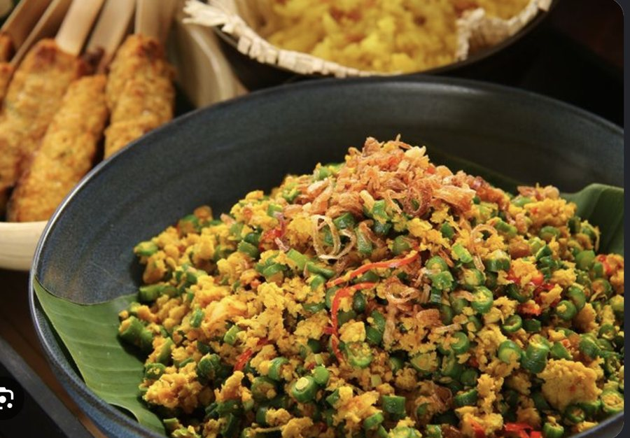

Tap around the screen. The round button by the title shows the steps.
Setting the table…
Modify
Oma Lien’s recipe

Balinese minced {{meat}} with toasted coconut, fried in a {{paste}} and served on pandan rice.
Ingredients
11
Wave to start
{{v.big}}
{{v.small}}
{{pick.mins}} mins
{{pick.level}}
{{pick.name}}
{{pick.who}}